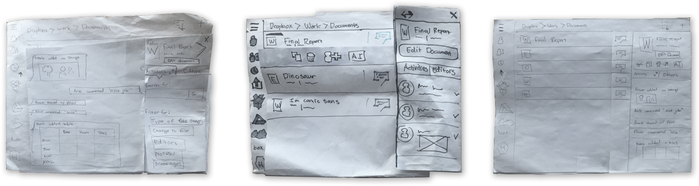
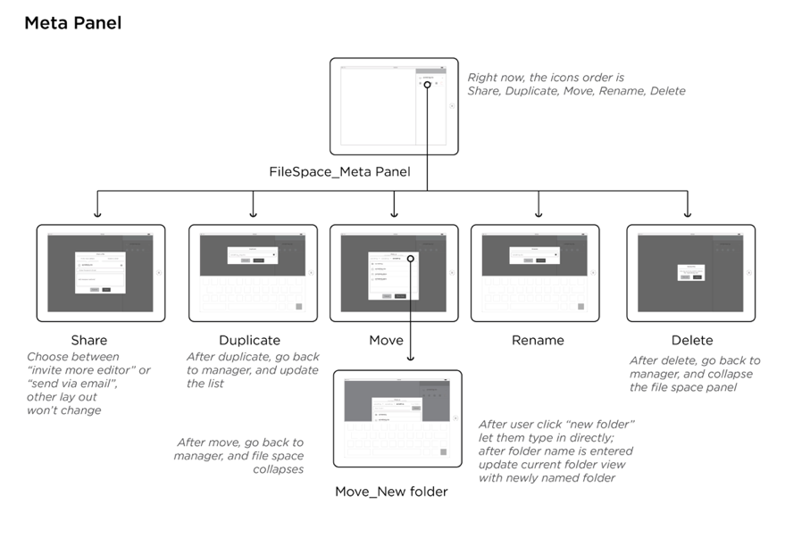
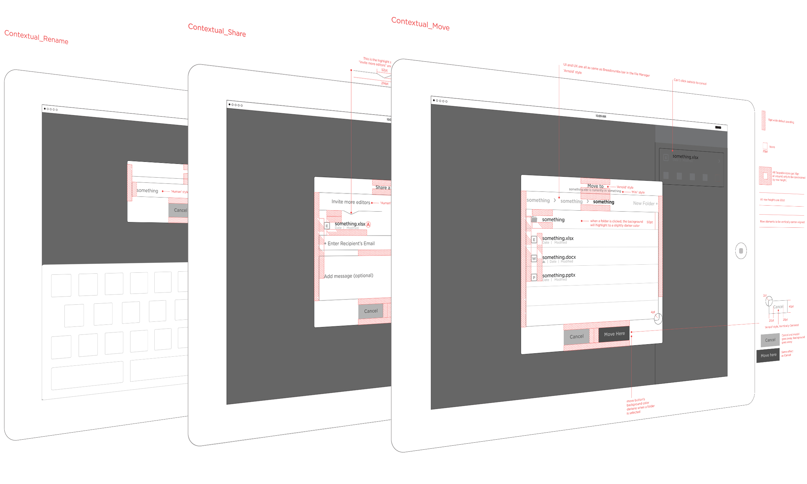

Interaction Design

Paper Prototype - File Options @ CloudOn, Tool: Paper & Pencil

Flow Diagram - File Options @ CloudOn, Tool: Illustrator

Low Fidelity Prototype - File Options @ CloudOn, Tool: Proto.io

Wireframes - File Options @ CloudOn, Tool: Illustrator